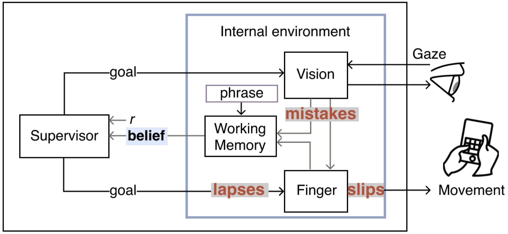

🏅Best Paper Honorable Mention @ CHI 2025 Yokohama 🌸
Empirical evidence shows that typing on touchscreen devices is prone to errors and that correcting them poses a major detriment to users’ performance. Design of text entry systems that better serve users, across their broad capability range, necessitates understanding the cognitive mechanisms that underpin these errors. However, prior models of typing cover only motor slips. The paper reports on extending the scope of computational modeling of typing to cover the cognitive mechanisms behind the three main types of error: slips (inaccurate execution), lapses (forgetting), and mistakes (incorrect knowledge). Given a phrase, a keyboard, and user parameters, Typoist simulates eye and finger movements while making human-like insertion, omission, substitution, and transposition errors. Its main technical contribution is the formulation of a supervisory control problem wherein the controller allocates cognitive resources to detect and fix errors generated by the various mechanisms. The model generates predictions of typing performance that can inform design, for better text entry systems.
